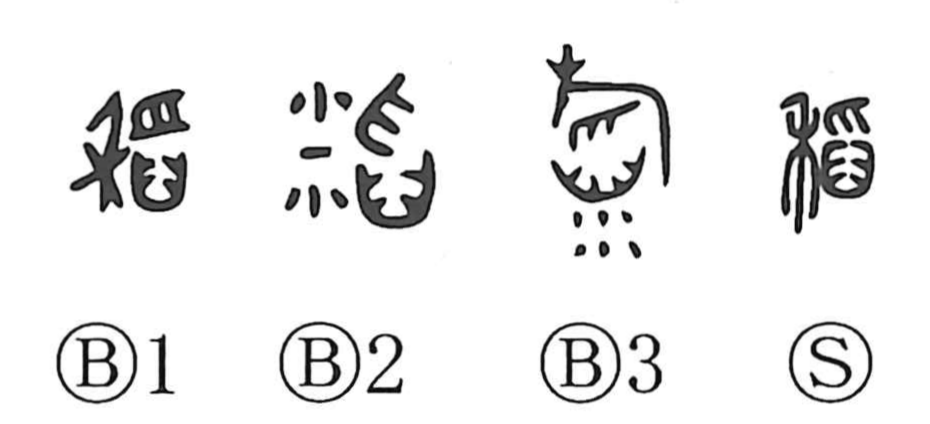

稲

Kun: ine, ina | On: tou
rice plant
Explanation
A phono-semantic character. The original form is 稻, with 舀 (tou) as the phonetic. 舀 depicts scooping something from a mortar (臼) with the fingertips (爪), and in bronze forms you can see grains scattering and spilling from the mortar. The semantic element 禾 shows the rice plant. In this way, the character comes to mean the rice plant itself. The image of spilling and overflow carried by 舀 also appears in related characters such as 滔, “to overflow.” Bronze inscriptions frequently include dedicatory phrases like “used for serving rice and millet” on rectangular offering vessels called 簠, showing that rice plants were presented as offerings to the gods.